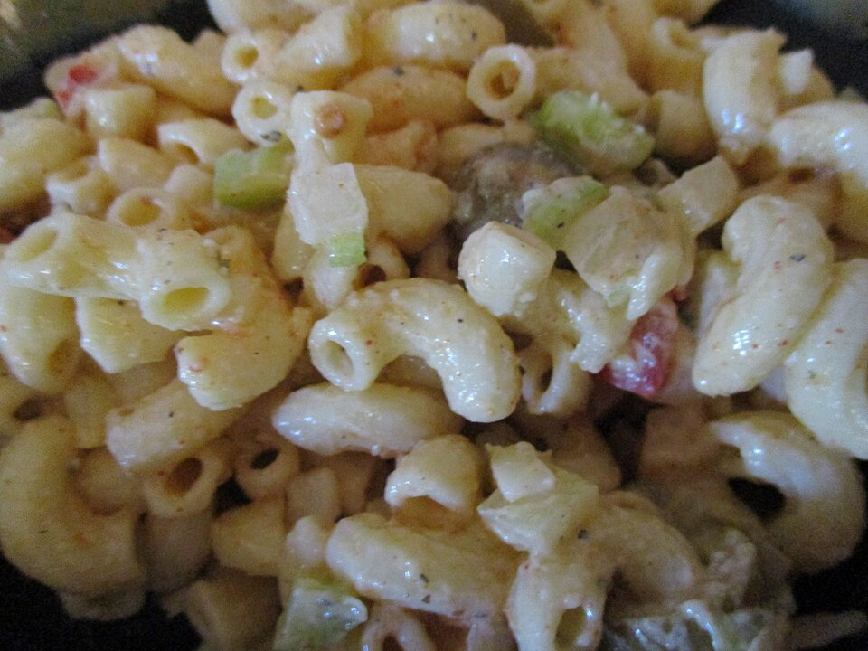

Home
Macaroni Salad

Description
Macaroni salad is a cold pasta salad typically made
with cooked elbow macaroni, a creamy dressing
(often mayonnaise-based), and various mix-ins like diced
vegetables, pickles, or olives.
Ingredients
For the brine
- ⅓ (80g) cup white vinegar
- 3 tablespoons (45g) water
- ⅓ cup (75g) sugar
- 3 tablespoons (41g) vegetable oil
- ½ cup (30g) onion grated or pureed
- 1 ¼ (9g) teaspoons fine sea salt
- ½ teaspoon (1.5g) white pepper
Remaining ingredients
- 1 pound (545g)elbow macaroni
- ¾ cup mayonnaise (172g) - plus more to achieve a smooth consistency
- ½ small green or red bell pepper - finely diced
- 1 rib celery - finely diced
Steps
- In a large bowl, whisk together all of the brine ingredients and set aside.
- Bring a large pot of salted water to boil and cook elbow macaroni to al dente. Drain and run the pasta under cold water to cool it off and stop the cooking process.
- Whisk the brine again then add the elbow macaroni along with the bell pepper and celery. Mix well to coat. At this time it is best to refrigerate the macaroni overnight so that the flavors absorb.
- The next day, add the mayo and mix well again. Add more mayo as required to get a creamy consistency. Taste test and season with salt and pepper to taste. Enjoy!